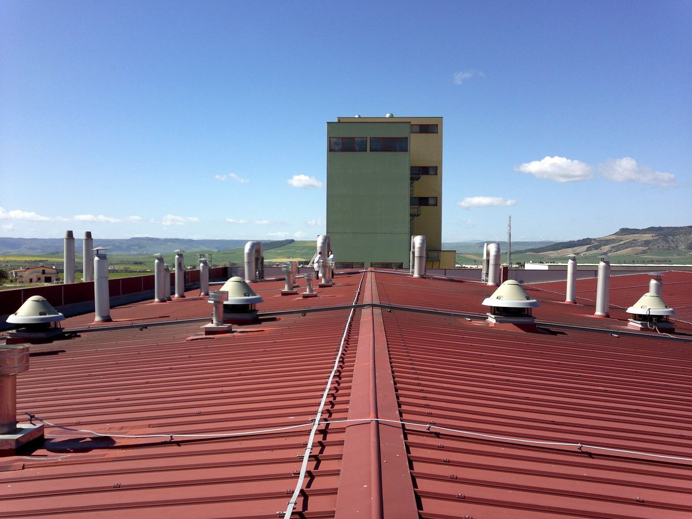
−90%di energia
Raffrescamento e umidificazione adiabatica
Consuma circa il 90% di energia in meno di un'unità di trattamento aria equivalente. Abbassa il caldo estivo che rallenta la produzione e affatica chi lavora.
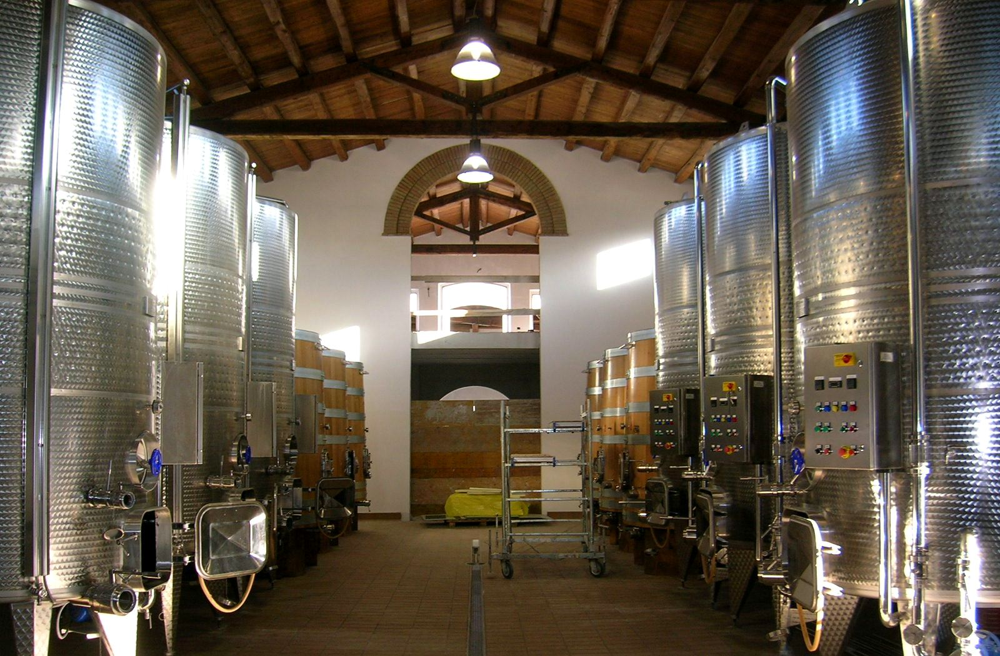
Progettiamo, costruiamo e installiamo da Corato (Bari) centrali frigorifere e termiche, controllo della temperatura, reti e sistemi PLC per cantine, pastifici, oleifici e ospedali.
impianti installati, censiti sulla nostra mappa delle realizzazioni
Paesi: Italia, Algeria, Libia, Malta, Germania e Stati Uniti
impianti in cantine e aziende vinicole
impianti in pastifici, 8 dei quali all'estero
Il freddo e il caldo che servono al vostro processo nascono in una centrale, viaggiano nelle reti, arrivano al prodotto e li governa un PLC. Noi progettiamo, costruiamo e installiamo tutto il percorso.
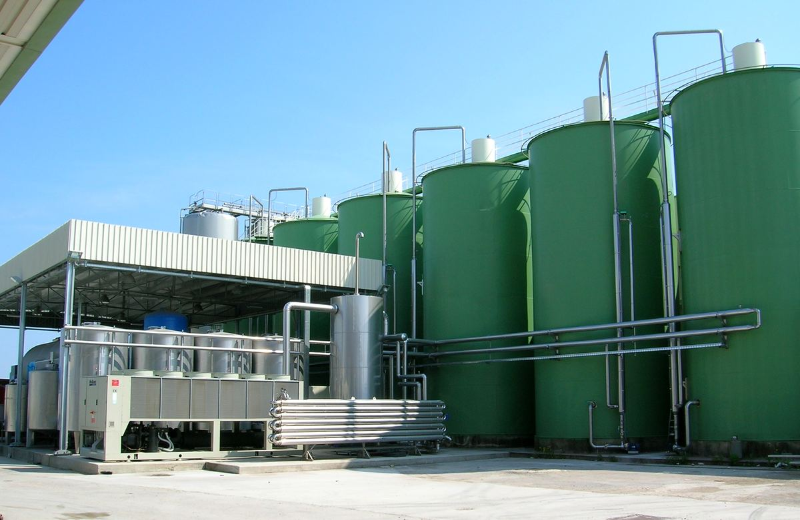
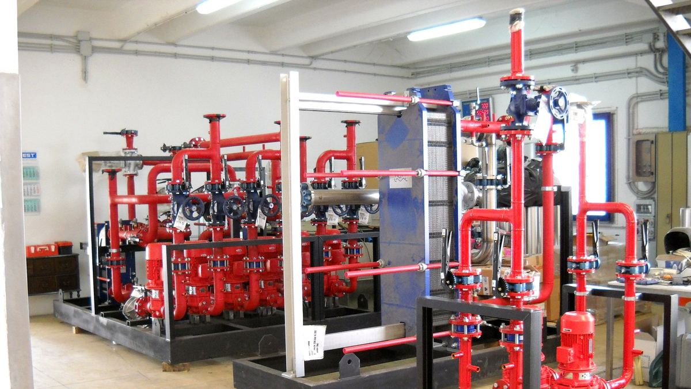
Le reti di distribuzione collegano la centrale alle utenze: tubazioni, pompe, collettori e tutti i componenti che portano il fluido termovettore fino all'ultimo serbatoio.
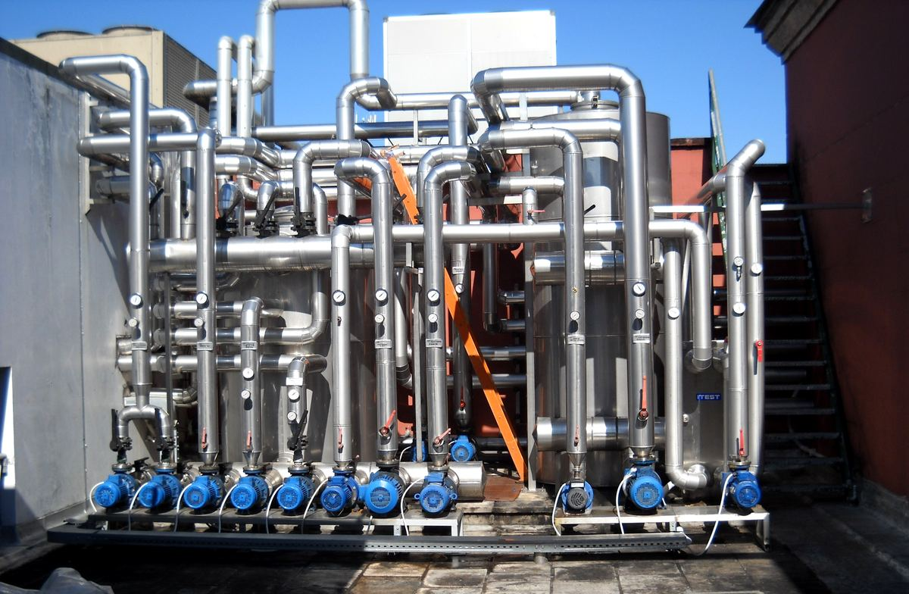
Controllo della temperatura di vasche di fermentazione, serbatoi, botti e vinificatori in rimontaggio, anche in vasche di cemento. Scambiatori tubo in tubo a curve larghe. Impianti di condizionamento, aspirazione e ventilazione, con canalizzazioni aria fornite e posate da noi.
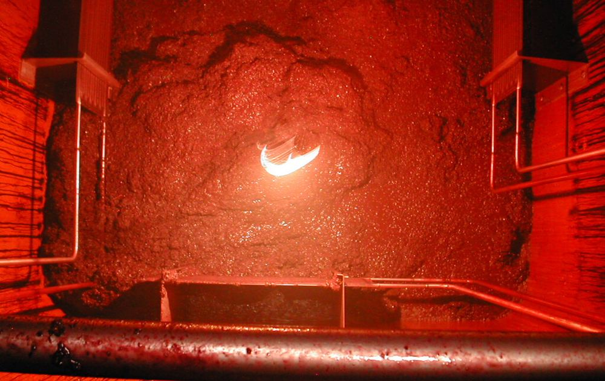
Sistemi di controllo avanzati con PLC programmabili per temperatura e umidità, le variabili che decidono la riuscita di un processo, dall'alimentare all'energetico. Quadri e microcontrollori li produciamo noi.
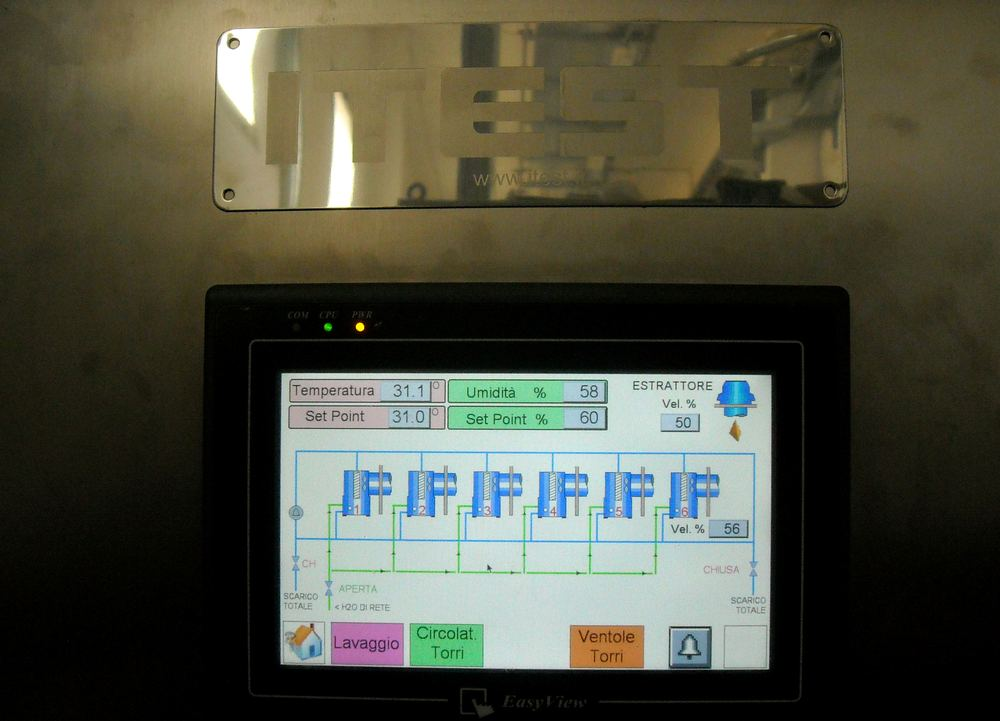
Forniamo e posiamo materiali coibenti su impianti di condizionamento, idrico-sanitari, di riscaldamento, di refrigerazione e a vapore: tubazioni, apparecchi, serbatoi, autoclavi.
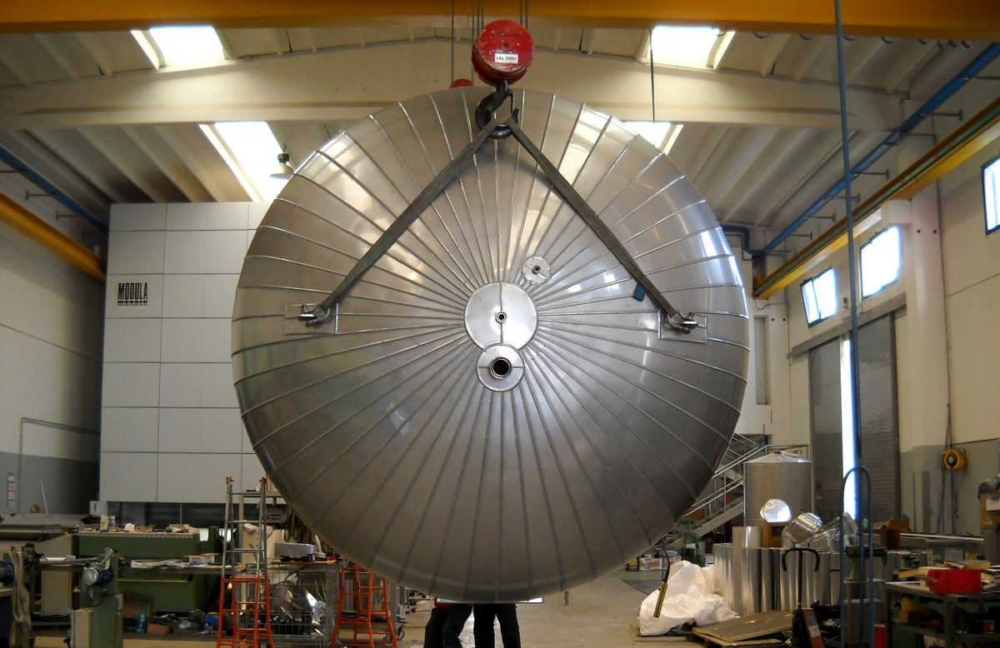
Affidabilità e risparmio energetico sono le nostre priorità da sempre. Sono anche il motivo per cui scegliamo queste tre tecnologie.

−90%di energia
Consuma circa il 90% di energia in meno di un'unità di trattamento aria equivalente. Abbassa il caldo estivo che rallenta la produzione e affatica chi lavora.
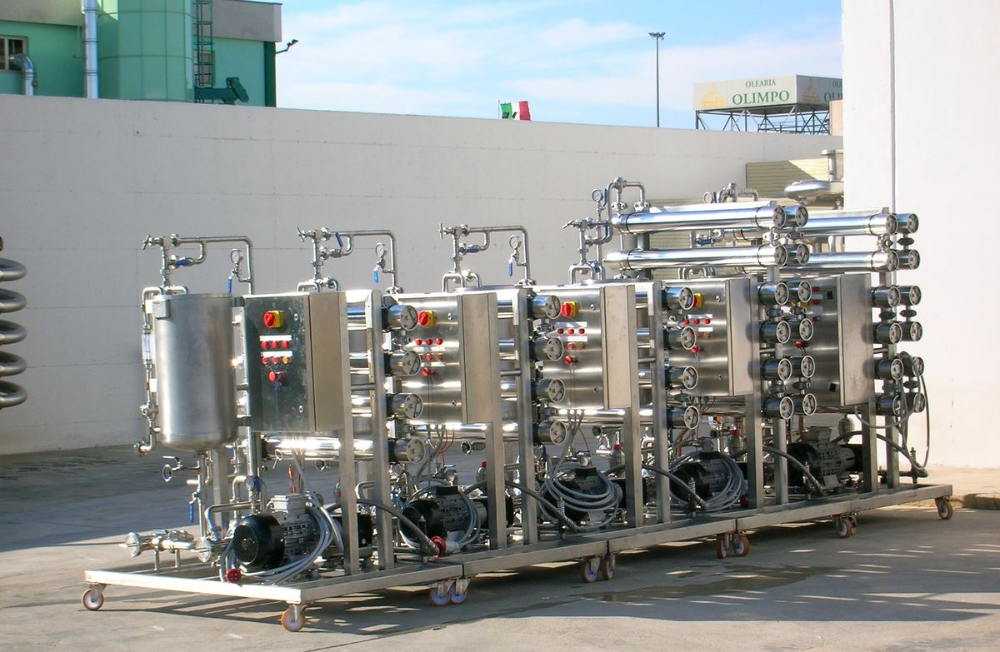
Separazione a membrana per concentrare gli zuccheri dei mosti d'uva. Su questa tecnologia applicata all'enologia abbiamo sviluppato progetti di ricerca con le università.
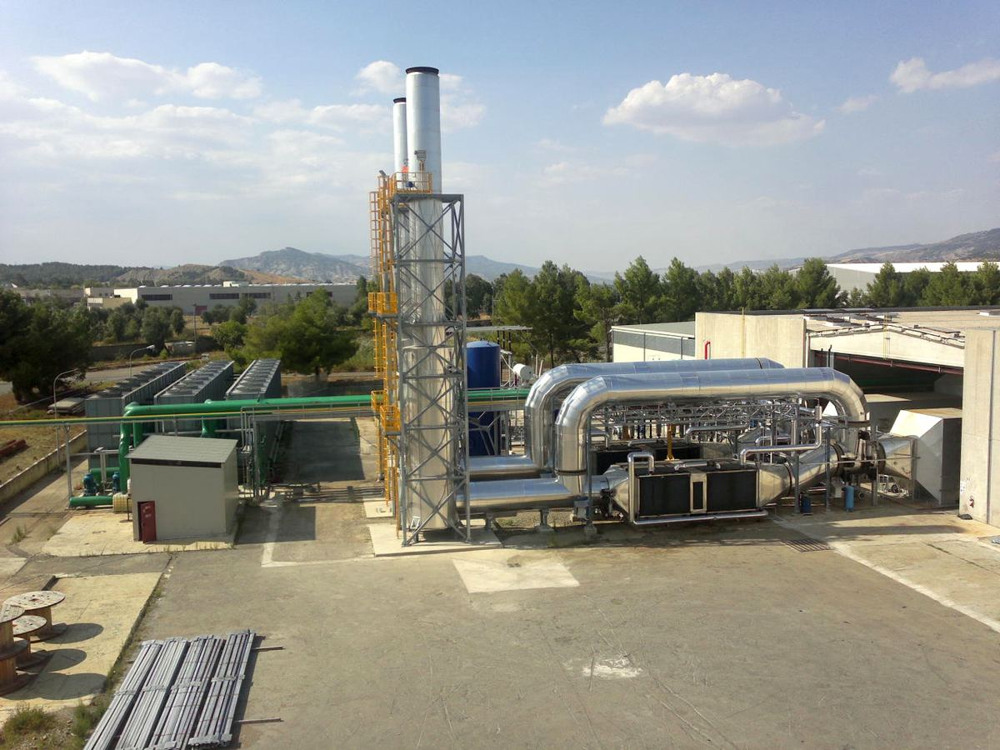
Energia elettrica e calore dallo stesso impianto, alimentato a oli vegetali. Sulla nostra mappa ne contiamo sette, dalla Puglia al Piemonte.
Foto di impianti consegnati: cantine, pastifici, oleifici, un aeroporto.
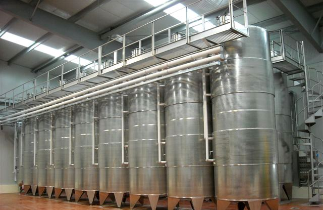
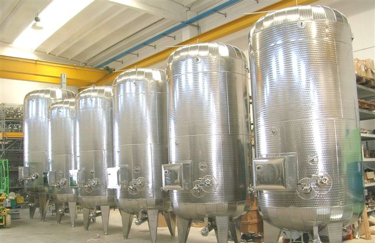
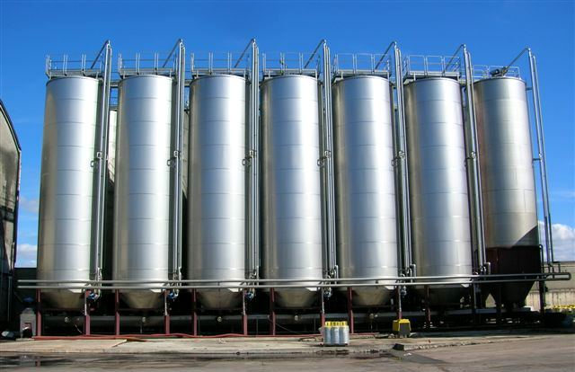
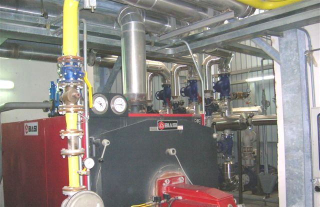
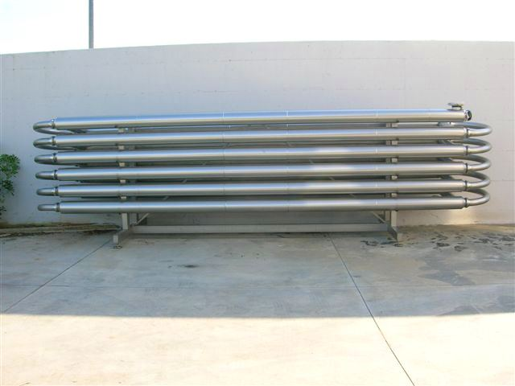
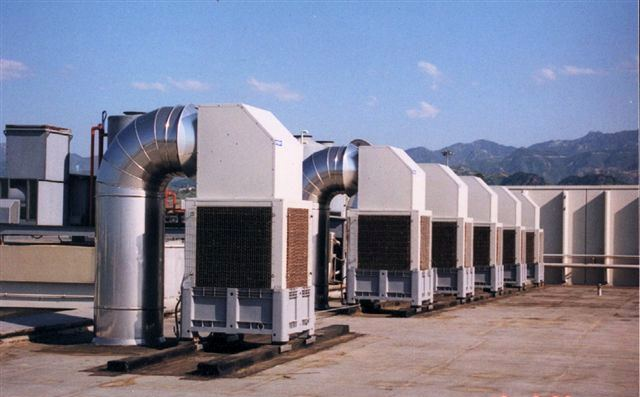
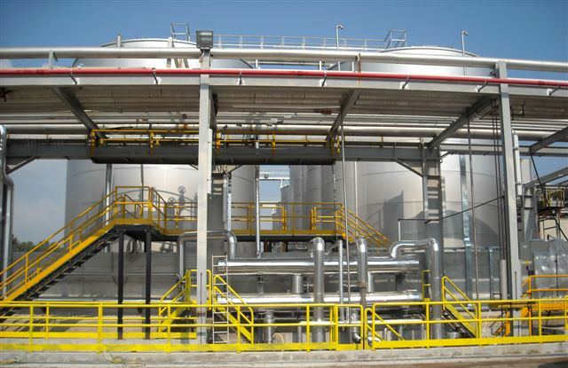
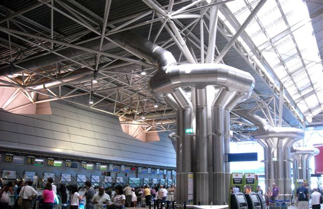
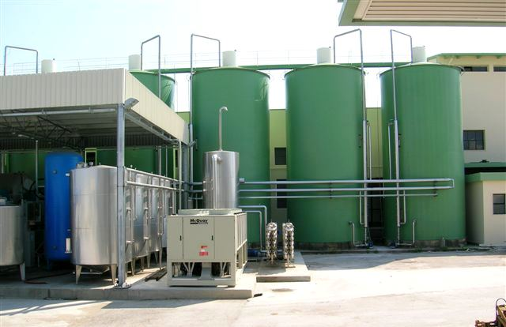
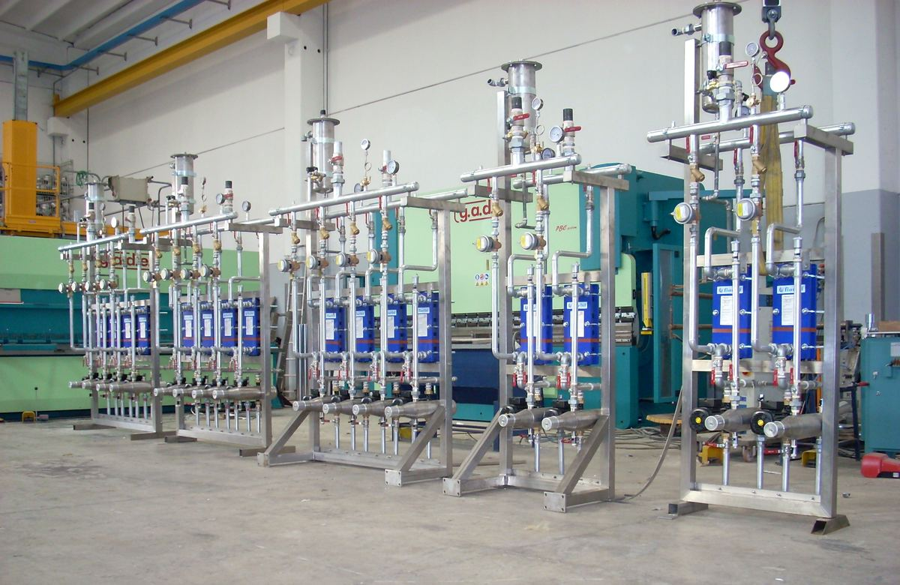
Industria di processo, agroalimentare, bevande, conserviero, farmaceutico e termoenergetico. Il numero accanto a ogni settore conta gli impianti della nostra mappa.
Controllo della temperatura in fermentazione e stoccaggio, centrali frigorifere, isolamento delle autoclavi, osmosi inversa dei mosti.
Centrali termiche, gruppi di termoregolazione, ricambio aria e raffrescamento delle sale di produzione. In Italia, Algeria, Libia, Germania e Stati Uniti.
Impianti di cogenerazione a oli vegetali e centrali per fluidi termovettori.
Serbatoi oleari e isolamento delle tubazioni negli oleifici, impianti per aziende del pomodoro e del caffè.
Gruppi di termoregolazione per le centrali delle aziende ospedaliere.
Ogni segmento di colonna è un impianto della nostra mappa delle installazioni.
48in Puglia
Il nostro territorio: le cantine del Salento e della Murgia, i pastifici e gli oleifici del Nord Barese, da San Severo a Galatina.
73in 12 regioni italiane
Da Chivasso e Pavia fino a Marsala e Pantelleria, passando per Campania, Basilicata, Molise, Lazio, Umbria e Toscana.
9all'estero
Pastifici in Algeria, Libia, Germania e negli Stati Uniti, a St. Louis, Excelsior Springs e Columbia. Una cantina a Malta.
Siamo nati in un'area ad alta vocazione agricola. Abbiamo imparato il mestiere realizzando impianti idraulici di processo per la trasformazione e impianti di condizionamento per l'affinamento e lo stoccaggio del prodotto finito.
Quell'esperienza ci ha spinto a cercare tecnologie sostenibili nei costi e nell'efficienza. Oggi gruppi di termoregolazione, scambiatori, serbatoi coibentati e quadri escono dalla nostra officina già assemblati, pronti per l'installazione.
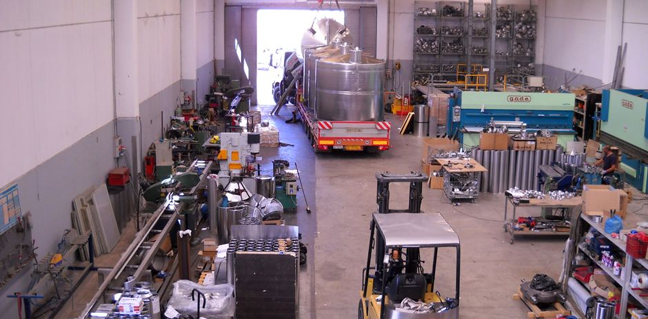
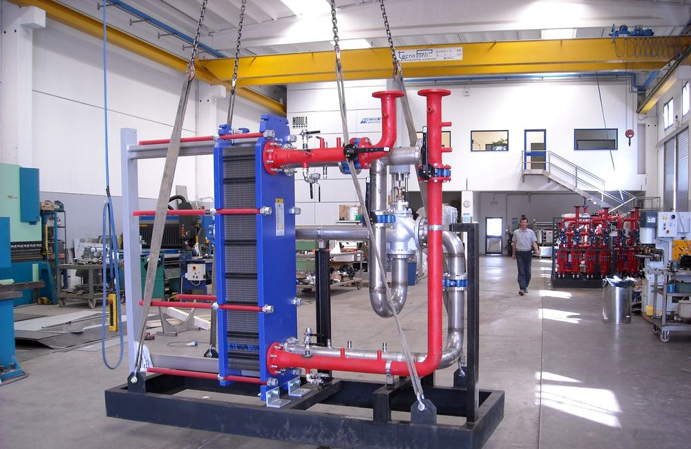
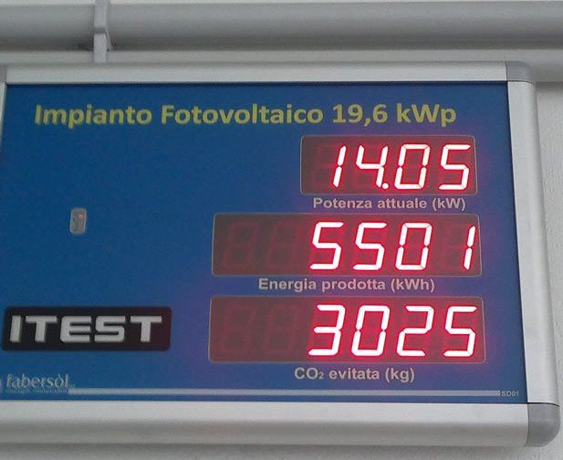
Diteci che cosa producete e che cosa vi serve: una centrale nuova, il controllo delle vasche, meno consumi. Un tecnico vi ricontatta per vedere lo stabilimento.